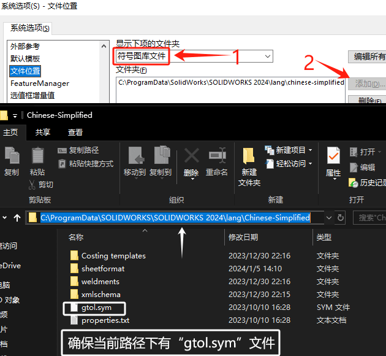

符号图库文件缺失
原因：Solidworks 软件安装新版或删除旧版后，往往会出现软件默认符号库文件缺失的问题。比如用 Solidworks 2016 打开原来设计的 2D 工程图时，则图纸上出现乱码文字。点击符号标识时，则显示“符号图库文件（GTOL.SYM）缺失”的提示。
方法1
可以从正常使用的电脑中，找到一份完整的当前版本的“GTOL.SYM”文件。一般会在如下地址找到：
1 | C:\ProgramData\SOLIDWORKS\SOLIDWORKS 20xx\lang\Chinese-Simplified |
并且将其设置到【系统选项-文件位置】符号图库文件

方法2
修复软件